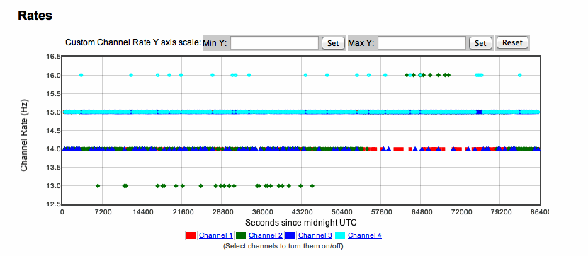

| Control Registers |
| CR0: 1F |
| Trigger: Two-fold |
| Channel(s): All |
| Find more information about the registers in the User's Manual, Series "6000", pg: 33. |
| Data Blessing |
| Bless/unbless your data based on the interpretation of the charts. Only the owners of the data files can bless/unbless the data. |
|
| Data Plots |
| All plots share the same X-Axis: seconds since midnight UTC. A full, 24-h day has 86,400 seconds (24*60*60). Files start at midnight of one day (or when data started writing) and end at midnight the following day (or when data stopped writing). |
| Customize X-Axes maximum scale and/or reset it. |
|
| The data below all end near 86400 seconds after midnight, two-thirds of a day or 1600 UTC. |
|  |
| “Singles rate” plotted as Channel Rate on the Y-Axis for each channel |
| All channels here are remarkably stable over the entire data run |
| Data come from a detector with four counters attached to four channels. Each counter fires independently. We count independent firings, calculate and plot the rate (#counts/second, Hz). Click on the channel name to toggle on/off. Customize Y axis min-max scale and/or reset it. |
|
| Number of “triggers” over time, Trigger Rate, also known as Coincidence Rate |
| This detector has a very low trigger rate; the counters must not be stacked atop each other. |
| A trigger occurs when the counters fire in a prescribed combination. This detector was set to so-called “two-fold” coincidence (CR0:1F). That means that the detector will only trigger when two or more counters fire within a short time window. This plot shows the rate (#counts/second, Hz) at which that happens throughout the day. |
|
|
|
|
| Four plots show one of four detector parameters over time Visible GPS Satellites—the detector relies on timing information from GPS satellites. This plot shows the number in view. Voltage—the detector has a voltage regulator that might drift. We track the voltage in order to understand detector response. The drift here is nominal. Barometric Pressure—the DAQ has a pressure sensor. When calibrated, it tells atmospheric pressure. Temperature—the GPS unit has a temperature probe. |